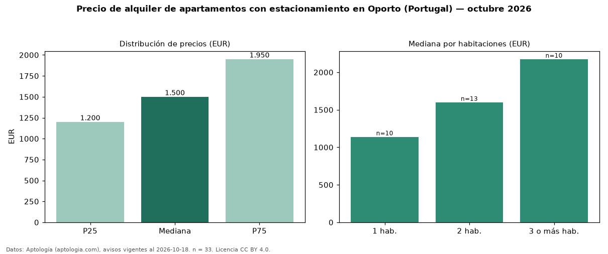

Precio de alquiler de apartamentos con estacionamiento en Oporto (Portugal) — octubre 2026
Con 33 avisos vigentes, el canon mediano de apartamentos con estacionamiento en alquiler en Oporto (Portugal) es EUR 1.500 al mes. Eso es 15 % más que la mediana de todos los apartamentos en alquiler de Oporto (EUR 1.300, n = 82); este segmento reúne el 40 % de esos avisos. Por metro cuadrado, la mediana es EUR 16,07/m² al mes (n = 33), 5 % por debajo del conjunto de referencia (EUR 16,99/m²). El área mediana anunciada es 103 m². El segmento con más oferta es el de 2 habitaciones (13 avisos, mediana EUR 1.600); pasar de 1 habitación a 3 o más habitaciones cambia la mediana +91 %. La mitad central de los avisos va de EUR 1.200 a EUR 1.950 (razón 1,6), una dispersión moderada. Datos: Aptología (aptologia.com), CC BY 4.0 — https://www.aptologia.com/pt/arrendamento/porto. Archivos: PDF, CSV con las cifras y gráfica PNG.

| Avisos únicos | 33 |
|---|---|
| Percentil 25 | COP 1.200 |
| Mediana | COP 1.500 |
| Percentil 75 | COP 1.950 |
| Mediana por m² | COP 16 |
Fuente: avisos vigentes de portales inmobiliarios recopilados por Aptología, deduplicados (mínimo 30 avisos únicos por celda). Precios pedidos, no cerrados. Fecha: 2026-10-18.